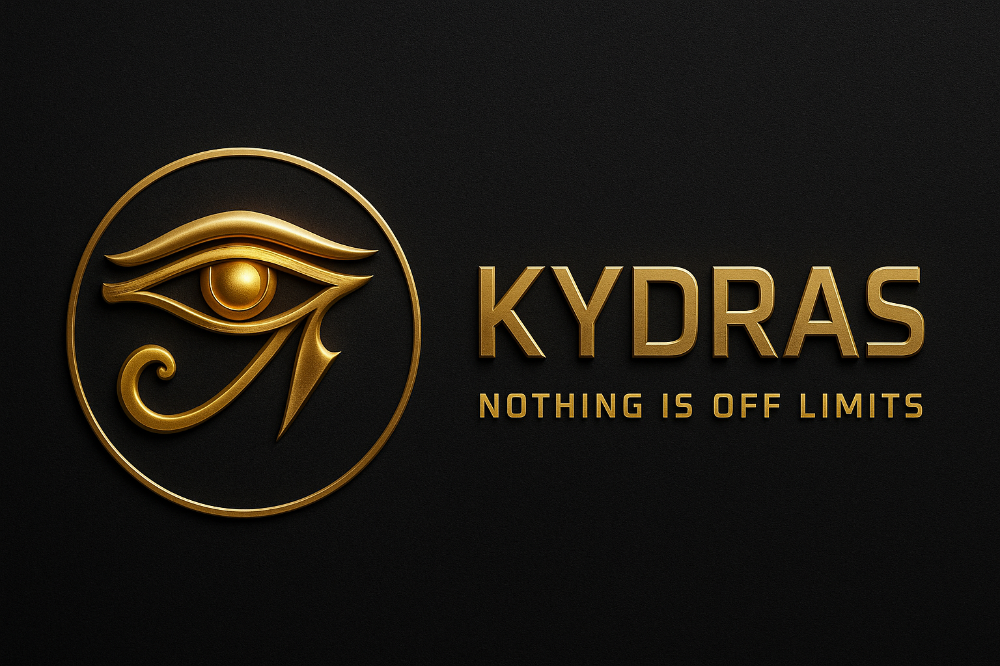

Independent dev • Red Team / OSINT • Building an ecosystem of cyber tools for real-world ops and learning.
🛠Mission: make powerful security tooling accessible, affordable, and practical.
Keeping the platform online + scaling integrations costs
$480/yr.
I set a $1,000 GoFundMe to cover infra + fees and keep
releases flowing.
🔗 Fund Kydras: https://gofund.me/7d85cda2
Perks - $10+ Early feature access
- $25+ Credits in repo README
- $50+ Priority beta invites
- $100+ Private dev channel sneak peeks
Languages: Python, Bash, JavaScript
Stacks: FastAPI, Flask, Node, SQLite/PostgreSQL
Ops: Kali, Docker, GitHub Actions, Linux
networking
Security: Wi-Fi tooling, OSINT pipelines, red-team
automation
| Project | What it does | Links |
|---|---|---|
| Kydras Echo | AI transcription/analysis for podcasts, calls, and field notes | Repo |
| Kydras Suite | Offensive tooling + automation + playbooks | Repos |
| Kydras OSINT | Lightweight OSINT collection & enrichment pipelines | Repo |
| Mobile Pentest Kit | Mobile-first pentest workflows, helpers, and scripts | Repo |
| eBook Studio | Turn notes/scripts into clean eBooks (lite/pro tiers) | Repo |
Want a quick demo screenshot? Check each repo’s README.
Signal boost helps — a star, share, or small donation keeps the lights on.

“Nothing Is Off Limits.”